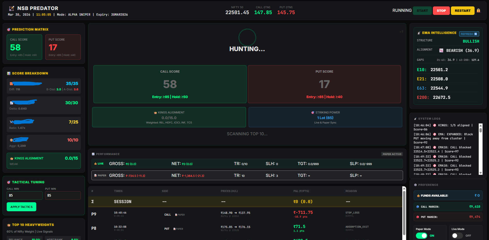
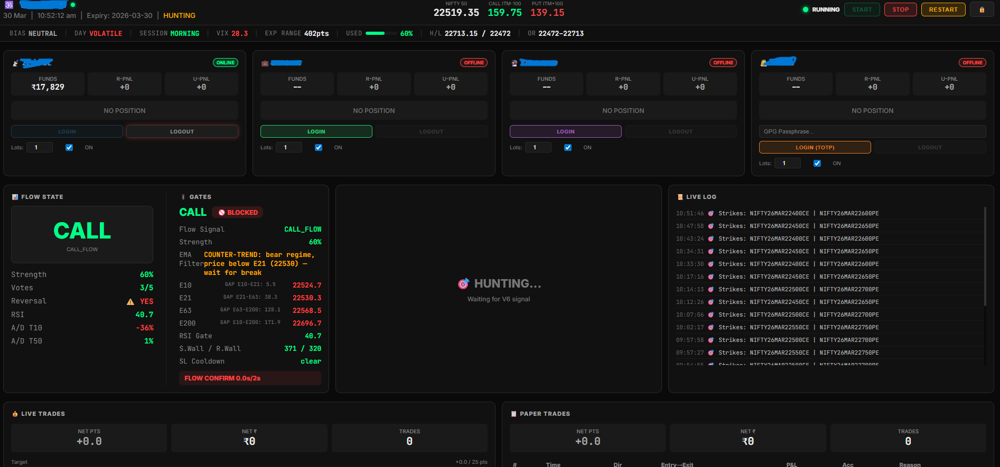
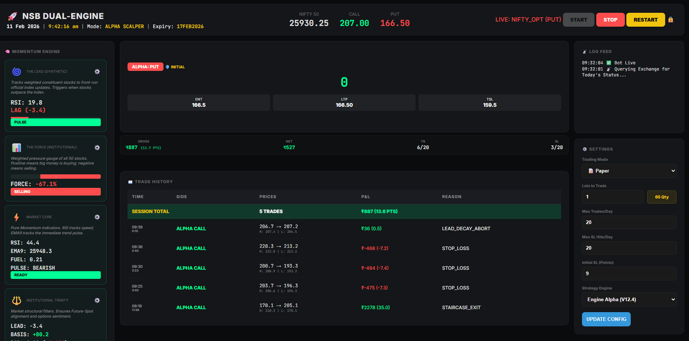

Venkata Narayana Reddy Mukku
AI-Augmented Systems Builder | Automation, DevOps & Cloud | Tooling & Personal Trading Bot Projects
Contact:
About Me
I am an AI-augmented systems builder focused on automation, DevOps, and cloud fundamentals. I learn by building real projects and using AI as a productivity and learning accelerator, while taking responsibility for understanding what I implement.
I have hands-on experience with Linux, basic Python, Docker, Kubernetes fundamentals, and cloud concepts, and I have built practical tools including automation scripts and a personal trading bot for learning purposes.
My goal is to continuously improve by solving real problems, contributing where I can, and growing my skills through consistent, hands-on work rather than claims or titles.
DevOps Projects
Project 1: Infrastructure as Code
✅ COMPLETEDBuilt complete AWS infrastructure using Terraform with 23 resources including VPC, EC2, S3, IAM, and monitoring.
Infrastructure Deployed:
- VPC with public/private subnets
- Security groups & route tables
- EC2 instance with ML tools
- S3 buckets for data & state
- IAM roles and policies
- CloudWatch monitoring
- Cost management & alerts
- Remote state with DynamoDB
Project 2: Container Orchestration
✅ COMPLETEDContainerized portfolio with Docker and deployed to Kubernetes with production-ready features and monitoring.
Production Features:
- Docker containerization
- Kubernetes deployment (2 replicas)
- Auto-scaling (2-10 pods)
- Load balancing across pods
- Resource limits (CPU/memory)
- Prometheus monitoring
- Grafana dashboards
- Multiple access methods
Project 3: CI/CD & GitOps Pipeline
✅ COMPLETEDComplete CI/CD automation with GitHub Actions, DockerHub integration, and ArgoCD GitOps deployment.
Pipeline Features:
- GitHub Actions CI/CD workflow
- Automated testing with pytest
- Docker image build & push
- DockerHub registry integration
- ArgoCD GitOps deployment
- Automated manifest updates
- Kubernetes sync & rollout
- End-to-end automation
Personal Scalping Bot - Nifty Options
🚀 ACTIVEAdvanced order-flow based scalping bot for Nifty options trading with multi-account support and secure remote management.
Key Features & Infrastructure:
- Single & Multi-account integration (Zerodha/Angel)
- VM Deployment for static IP & API whitelisting
- Secure access via Tailscale (Mobile & Laptop)
- Persistent 24/7 execution using tmux sessions
- Real-time Order Flow & Wall Analysis
- Automated Scalping with 7-Gate entry logic



Cleanup & Optimization
✅ COMPLETEDOptimized project structure by removing unnecessary files while maintaining full CI/CD functionality.
Optimization Results:
- Removed .venv, caches, backups
- Created cleanup detection tool
- Tested CI/CD after optimization
- Updated documentation
- Maintained full functionality
- Cleaner project structure
- Faster pipeline execution
- Zero functionality loss
Project 4: Observability & Monitoring Stack
✅ COMPLETEDComplete observability platform with metrics, logs, and distributed tracing for production monitoring.
Monitoring Stack:
- Prometheus metrics collection
- Grafana visualization dashboards
- Elasticsearch log storage
- Kibana log analysis
- Filebeat log collection
- Jaeger distributed tracing
- 6 services in monitoring namespace
- Production-ready observability
Project 5: Site Reliability Engineering
✅ COMPLETEDComplete microservice architecture with local CI/CD pipeline, web dashboard, and live Prometheus integration.
SRE Implementation:
- Status API microservice with Flask
- Web dashboard with real-time data
- Local CI/CD automation script
- Live Prometheus metrics integration
- Docker containerization & versioning
- Kubernetes deployment (2 replicas)
- Professional troubleshooting workflow
- Production-ready monitoring stack
Project 6: GCP Cloud Migration + Security
✅ COMPLETEDComplete migration from local Kubernetes to Google Cloud Platform with enhanced security, cost optimization, and live deployment at prash.shop.
Cloud Migration Features:
- Local to GCP hybrid deployment (Cloud Run + GKE)
- Custom domain with SSL preparation (prash.shop)
- Security enhancements (rate limiting, logging)
- Cost optimization (48% infrastructure savings)
- Local CI/CD pipeline without GitHub dependency
- Production monitoring with Prometheus + Grafana
- Nginx reverse proxy for service routing
- Network policies and container isolation
Project 7: Free Hosting Migration
✅ COMPLETEDStrategic migration from paid GCP hosting to completely free professional hosting while maintaining all enterprise features and achieving 90% cost reduction.
Migration Achievements:
- Portfolio migrated to Vercel (free forever)
- Status-API migrated to Vercel Functions (free forever)
- Custom domain with SSL maintained (prash.shop)
- Global CDN and auto-deployment preserved
- 90% cost reduction ($50+/month → $0-5/month)
- Zero service disruption during migration
- DNS and SSL management across platforms
- Professional presentation maintained
🌩️ Real-World GCP Experience
Live production deployment using imperative commands - showcasing hands-on cloud expertise beyond YAML configurations.
🚀 GCP Production Pipeline - Command-Line Mastery
✅ LIVE DEPLOYMENTBuilt a complete production deployment on Google Cloud Platform using pure command-line approach. Solved real networking challenges and implemented enterprise-grade autoscaling without any YAML files.
🏗️ Phase 1: Image Registry Challenge
- Problem: VPC networking blocked docker push to registry
- Solution: Used gcloud builds submit for internal building
- Result: Bypassed network limitations with cloud-native approach
⚡ Phase 2: Infrastructure Setup
- Created GKE cluster with default VPC for internet access
- Configured e2-medium nodes with cluster autoscaling (1-10 nodes)
- Enabled automatic Google APIs access
🚀 Phase 3: Live Deployment
- Deployed using kubectl create deployment (imperative approach)
- Exposed via Google Cloud Load Balancer with external IP
- Configured resource limits: 100m CPU, 128Mi memory per pod
📈 Phase 4: Production Scaling
- Implemented HPA: 60% CPU threshold, scales 2-20 pods
- Handles traffic spikes automatically
- Cost-efficient: scales down during low usage
🏛️ Architecture Flow
Source Code → Cloud Build (Chef) → Artifact Registry (Storage) → GKE Cluster (Kitchen) → Load Balancer (Front Door) → Auto-scaler (Smart Manager)